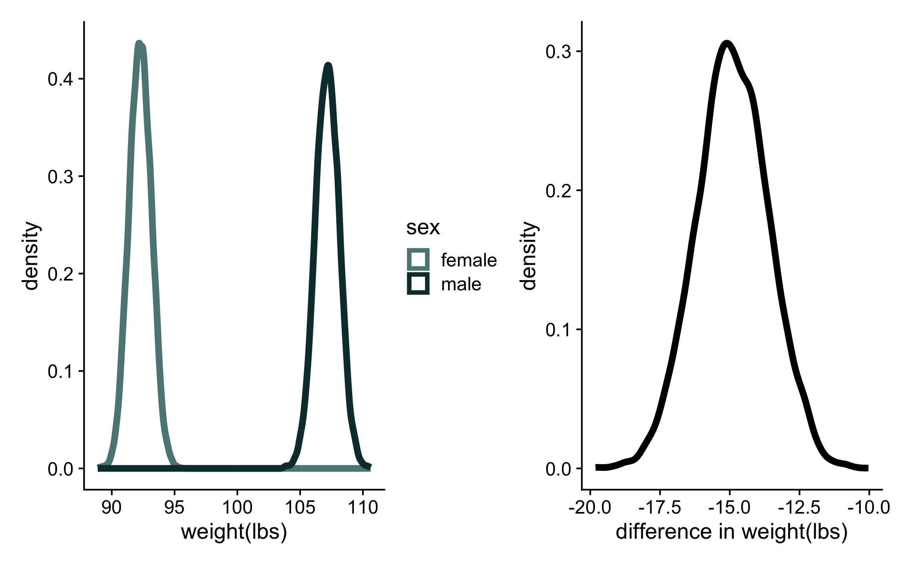
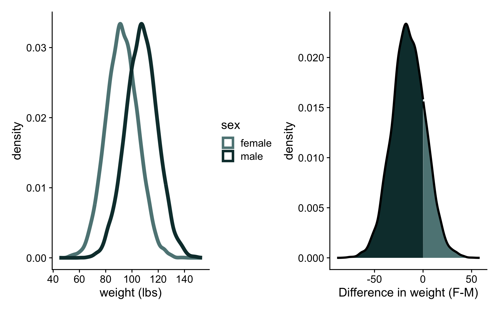
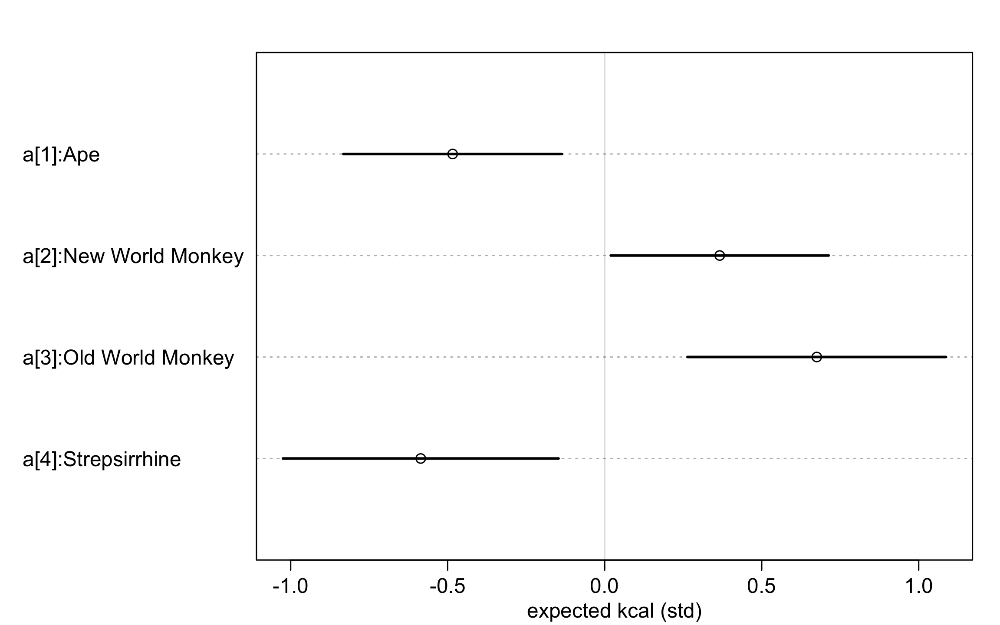
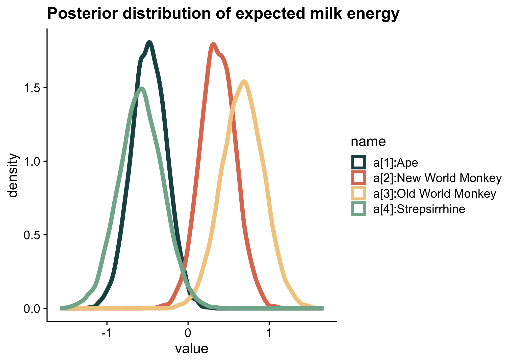
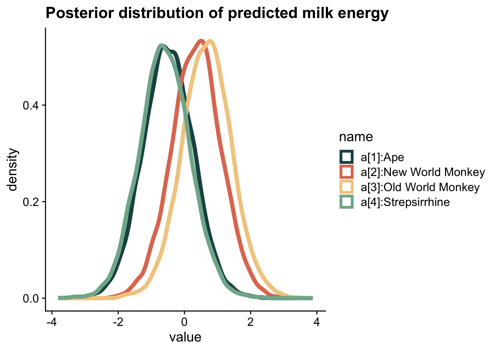
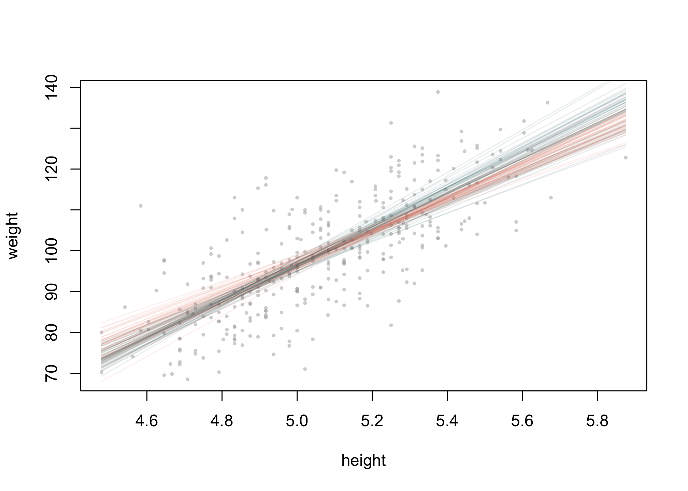
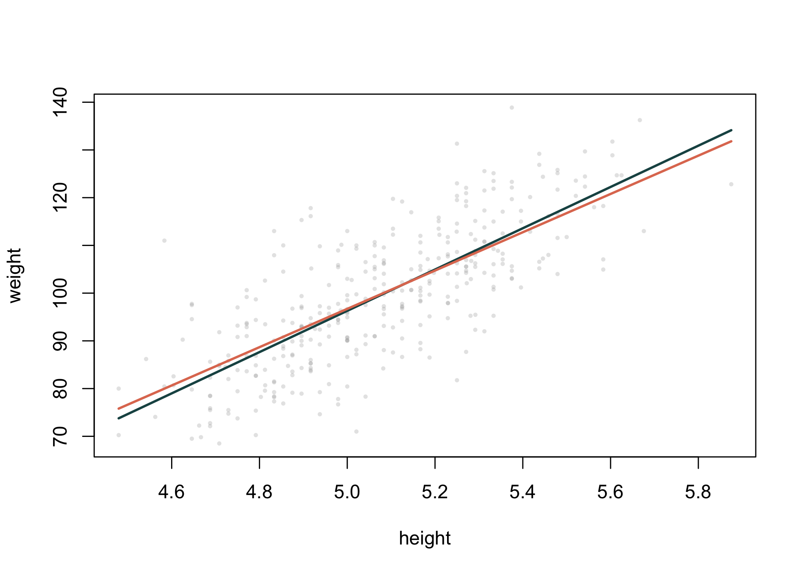

library(tidyverse)
library(cowplot)
library(rethinking)
library(patchwork)Week 2: Linear models and causal inference
Categories and curves
Workspace setup:
As we develop more useful models, we’ll begin to practice the art of generating models with multiple estimands. An estimand is a quantity we want to estimate from the data. Our models may not themselves produce the answer to our central question, so we need to know how to calculate these values from the posterior distributions.
This is going to be different from prior regression courses (PSY 612), where our models were often designed to give us precisely what we wanted. For example, consider the regression:
\[ \hat{Y} = b_0 + b_1(D) \] Where \(Y\) is a continuous outcome and \(D\) is a dummy coded variable (0 = control; 1 = treatment).
- What does \(b_0\) represent?
- What does \(b_1\) represent?
- How would you calculate or estimate the means of both groups from this model?
Categories
Forget dummy codes. From here on out, we will incorporate categorical causes into our models by using index variables. An index variable contains integers that correspond to different categories. The numbers have no inherent meaning – rather, they stand as placeholders or shorthand for categories.
data("Howell1")
d <- Howell1
library(measurements)
d$height <- conv_unit(d$height, from = "cm", to = "feet")
d$weight <- conv_unit(d$weight, from = "kg", to = "lbs")
d <- d[d$age >= 18, ]
d$sex <- ifelse(d$male == 1, 2, 1) # 1 = female, 2 = male
head(d[, c("male", "sex")]) male sex
1 1 2
2 0 1
3 0 1
4 1 2
5 0 1
6 1 2Mathematical model
Let’s write a mathematical model to express weight in terms of sex.
\[\begin{align*} w_i &\sim \text{Normal}(\mu_i, \sigma) \\ \mu_i &= \alpha_{SEX[i]} \\ \alpha_j &\sim \text{Normal}(130, 20)\text{ for }j = 1..2 \\ \sigma &\sim \text{Uniform}(0, 50) \end{align*}\]
flist <- alist(
weight ~ dnorm( mu , sigma) ,
mu <- a[sex] ,
a[sex] ~ dnorm( 130, 20 ) ,
sigma ~ dunif(0, 50)
)Fitting the model using quap()
m1 <- quap( flist, data=d )
precis(m1, depth=2) mean sd 5.5% 94.5%
a[1] 92.25941 0.8841993 90.84629 93.67253
a[2] 107.17407 0.9411678 105.66990 108.67824
sigma 12.10283 0.4561546 11.37381 12.83185Here, we are given the estimates of the parameters specified in our model: the average weight of women (a[1]) and the average weight of men (a[2]). But our question is whether these average weights are different. How do we get that?
post <- extract.samples( m1 )
str(post)List of 2
$ sigma: num [1:10000] 11.5 12.3 12.6 12.1 12 ...
$ a : num [1:10000, 1:2] 90.5 90.4 90.5 93.5 91.2 ...
- attr(*, "source")= chr "quap posterior: 10000 samples from m1"head(post$a) [,1] [,2]
[1,] 90.54105 106.3307
[2,] 90.42072 108.0340
[3,] 90.46613 108.3310
[4,] 93.53308 108.3938
[5,] 91.24400 106.6515
[6,] 92.98670 106.0057post$diff_fm <- post$a[,1] - post$a[,2]
precis(post, depth=2 ) mean sd 5.5% 94.5% histogram
sigma 12.10661 0.4534537 11.39021 12.83740 ▁▁▂▇▇▃▁▁
a[1] 92.26813 0.8890272 90.85056 93.67891 ▁▁▁▁▂▃▇▇▇▃▂▁▁▁▁
a[2] 107.16361 0.9465382 105.65797 108.66073 ▁▁▁▁▂▅▇▇▇▃▂▁▁▁▁
diff_fm -14.89548 1.2955446 -16.96582 -12.81216 ▁▁▁▃▇▇▅▂▁▁Calculate the contrast
We can create two plots. One is the posterior distributions of average female and male weights and one is the average difference.
p1 <- post %>% as.data.frame() %>%
pivot_longer(starts_with("a")) %>%
mutate(sex = ifelse(name == "a.1", "female", "male")) %>%
ggplot(aes(x=value, color = sex)) +
geom_density(linewidth = 2) +
labs(x = "weight(lbs)")
p2 <- post %>% as.data.frame() %>%
ggplot(aes(x=diff_fm)) +
geom_density(linewidth = 2) +
labs(x = "difference in weight(lbs)")
( p1 | p2)
Expected values vs predicted values
A note that the distributions of the mean weights is not the same as the distribution of weights period. For that, we need the posterior predictive distributions.
pred_f <- rnorm(1e4, mean = post$a[,1], sd = post$sigma )
pred_m <- rnorm(1e4, mean = post$a[,2], sd = post$sigma )
pred_post = data.frame(pred_f, pred_m) %>%
mutate(diff = pred_f-pred_m)
# plot distributions
p1 <- pred_post %>% pivot_longer(starts_with("pred")) %>%
mutate(sex = ifelse(name == "pred_f", "female", "male")) %>%
ggplot(aes(x = value, color = sex)) +
geom_density(linewidth = 2) +
labs(x = "weight (lbs)")
# plot difference
# Compute density first
density_data <- density(pred_post$diff)
# Convert to a tibble for plotting
density_df <- tibble(
x = density_data$x,
y = density_data$y,
fill_group = ifelse(x < 0, "male", "female") # Define fill condition
)
# Plot with area fill
p2 <- ggplot(density_df, aes(x = x, y = y, fill = fill_group)) +
geom_area() + # Adjust transparency if needed
geom_line(linewidth = 1.2, color = "black") + # Keep one continuous curve
labs(x = "Difference in weight (F-M)", y = "density") +
guides(fill = "none")
(p1 | p2)
exercise
In the rethinking package, the dataset milk contains information about the composition of milk across primate species, as well as some other facts about those species. The taxonomic membership of each species is included in the variable clade; there are four categories.
- Create variable in the dataset to assign an index value to each of the 4 categories.
- Standardize the milk energy variable (
kcal.per.g). 1 - Write a mathematical model to express the average milk energy (in standardized kilocalories) in each clade.
solution
data("milk")
str(milk)'data.frame': 29 obs. of 8 variables:
$ clade : Factor w/ 4 levels "Ape","New World Monkey",..: 4 4 4 4 4 2 2 2 2 2 ...
$ species : Factor w/ 29 levels "A palliata","Alouatta seniculus",..: 11 8 9 10 16 2 1 6 28 27 ...
$ kcal.per.g : num 0.49 0.51 0.46 0.48 0.6 0.47 0.56 0.89 0.91 0.92 ...
$ perc.fat : num 16.6 19.3 14.1 14.9 27.3 ...
$ perc.protein : num 15.4 16.9 16.9 13.2 19.5 ...
$ perc.lactose : num 68 63.8 69 71.9 53.2 ...
$ mass : num 1.95 2.09 2.51 1.62 2.19 5.25 5.37 2.51 0.71 0.68 ...
$ neocortex.perc: num 55.2 NA NA NA NA ...milk$clade_id <- as.integer(milk$clade)
milk$K <- standardize(milk$kcal.per.g)\[\begin{align*} K_i &\sim \text{Normal}(\mu_i, \sigma) \\ \mu_i &= \alpha_{\text{CLADE}[i]} \\ \alpha_i &\sim \text{Normal}(0, 0.5) \text{ for }j=1..4 \\ \sigma &\sim \text{Exponential}(1) \\ \end{align*}\]
Exercise: Now fit your model using quap(). It’s ok if your mathematical model is a bit different from mine.
solution
flist <- alist(
K ~ dnorm( mu , sigma ) ,
mu <- a[clade_id] ,
a[clade_id] ~ dnorm( 0 , 0.5 ) ,
sigma ~ dexp( 1 )
)
m2 <- quap(
flist, data = milk
)
precis( m2, depth=2 ) mean sd 5.5% 94.5%
a[1] -0.4843457 0.21764114 -0.83217822 -0.1365131
a[2] 0.3662482 0.21705885 0.01934621 0.7131502
a[3] 0.6752171 0.25753406 0.26362794 1.0868063
a[4] -0.5858198 0.27450850 -1.02453743 -0.1471022
sigma 0.7196448 0.09653323 0.56536602 0.8739235Plotting with rethinking
labels <- paste( "a[" , 1:4, "]:", levels(milk$clade), sep="" )
plot(
precis(m2, depth=2, pars = "a"),
labels=labels,
xlab="expected kcal (std)"
)
exercise
Plot the following distributions:
- Posterior distribution of average milk energy by clade.
- Posterior distribution of predicted milk energy values by clade.
solution
post <- extract.samples( m2 )
names(labels) = paste("a.", 1:4, sep = "")
post %>% as.data.frame() %>%
pivot_longer(starts_with("a")) %>%
mutate(name = recode(name, !!!labels)) %>%
ggplot(aes(x = value, color = name)) +
geom_density(linewidth = 2) +
labs(title = "Posterior distribution of expected milk energy")
solution
post <- extract.samples( m2 )
a.1 = rnorm(1e4, post$a[,1], post$sigma)
a.2 = rnorm(1e4, post$a[,2], post$sigma)
a.3 = rnorm(1e4, post$a[,3], post$sigma)
a.4 = rnorm(1e4, post$a[,4], post$sigma)
data.frame(a.1, a.2, a.3, a.4) %>%
pivot_longer(everything()) %>%
mutate(name = recode(name, !!!labels)) %>%
ggplot(aes(x = value, color = name)) +
geom_density(linewidth = 2) +
labs(title = "Posterior distribution of predicted milk energy")
Combining index variables and slopes
Let’s return to the weight example. What if we want to control for height?
\[\begin{align*} w_i &\sim \text{Normal}(\mu_i, \sigma) \\ \mu_i &= \alpha_{S[i]} + \beta_{S[i]}(H_i-\bar{H})\\ \alpha_j &\sim \text{Normal}(130, 20)\text{ for }j = 1..2 \\ \beta_j &\sim \text{Normal}(0, 25)\text{ for }j = 1..2 \\ \sigma &\sim \text{Uniform}(0, 50) \end{align*}\]
dat <- list(
weight = d$weight,
height = d$height,
Hbar = mean(d$height),
sex = d$male + 1
)
flist <- alist(
weight ~ dnorm( mu , sigma) ,
mu <- a[sex] + b[sex]*(height-Hbar),
a[sex] ~ dnorm( 150, 20 ) ,
b[sex] ~ dnorm( 0, 25 ) ,
sigma ~ dunif(0, 50)
)
m3 <- quap(flist, data=dat)precis(m3, depth=3) mean sd 5.5% 94.5%
a[1] 99.473580 0.9579493 97.942592 101.004568
a[2] 99.608464 1.0007879 98.009012 101.207917
b[1] 43.352004 4.0421614 36.891850 49.812159
b[2] 40.107242 3.6519906 34.270656 45.943828
sigma 9.323247 0.3515481 8.761405 9.885089post <- extract.samples(m3)
str(post)List of 3
$ sigma: num [1:10000] 8.91 8.7 9.26 9.38 9.15 ...
$ a : num [1:10000, 1:2] 100.9 98.4 100.3 100.5 99.8 ...
$ b : num [1:10000, 1:2] 45.7 35.4 47.2 44.1 46.5 ...
- attr(*, "source")= chr "quap posterior: 10000 samples from m3"Plot the slopes using extract.samples()
Code
xbar = mean(d$height) # need this because we centered
post <- extract.samples(m3) # sample intercepts and slopes from the posterior
plot(d$weight ~ d$height, cex=0.5, pch=16, col=col.alpha("darkgrey",0.5),
xlab = "height", ylab = "weight")
#plot the lines implied by the first 50 draws from the posterior
for(i in 1:50){
curve(post$a[i, 1] +post$b[i, 1]*(x-xbar),
add = T,
col=col.alpha("#1c5253",0.1))
curve(post$a[i, 2] +post$b[i, 2]*(x-xbar),
add = T,
col=col.alpha("#e07a5f",0.1))
}
Plot the slopes using link(). (Run this yourself and open up the objects muF and muM to determine what the link() function is doing.)
Code
xseq <- seq( min(d$height), max(d$height), len=100) # some values for X
plot(d$weight ~ d$height, cex=0.5, pch=16, col=col.alpha("darkgrey",0.3),
xlim = range(d$height), ylim = range(d$weight),
xlab = "height", ylab = "weight")
muF <- link(m3, data=list(sex=rep(1,100), height=xseq, Hbar = mean(d$height)))
lines(xseq, apply(muF, 2, mean), lwd = 2, col = "#1c5253" )
muM <- link(m3, data=list(sex=rep(2,100), height=xseq, Hbar = mean(d$height)))
lines(xseq, apply(muM, 2, mean), lwd = 2, col = "#e07a5f")
exercise
Return to the milk data. Write a mathematical model expressing the energy of milk as a function of the species body mass (mass) and clade category. Be sure to include priors. Fit your model using quap().
solution
\[\begin{align*} K_i &\sim \text{Normal}(\mu_i, \sigma) \\ \mu_i &= \alpha_{\text{CLADE}[i]} + \beta_{\text{CLADE}[i]}(M-\bar{M})\\ \alpha_i &\sim \text{Normal}(0, 0.5) \text{ for }j=1..4 \\ \beta_i &\sim \text{Normal}(0, 0.5) \text{ for }j=1..4 \\ \sigma &\sim \text{Exponential}(1) \\ \end{align*}\]
dat <- list(
K = standardize(milk$kcal.per.g),
M = milk$mass,
Mbar = mean(milk$mass),
clade_id = milk$clade_id
)
flist <- alist(
K ~ dnorm( mu , sigma ) ,
mu <- a[clade_id] +b[clade_id]*(M-Mbar),
a[clade_id] ~ dnorm( 0 , 0.5 ) ,
b[clade_id] ~ dnorm( 0 , 0.5 ) ,
sigma ~ dexp( 1 )
)
m4 <- quap(
flist, data = dat
)precis( m4, depth=2 ) mean sd 5.5% 94.5%
a[1] -0.434263960 0.261119768 -0.851583782 -0.016944138
a[2] -0.282795951 0.478554431 -1.047618360 0.482026458
a[3] 0.368829638 0.418886269 -0.300631524 1.038290799
a[4] -0.005061371 0.498109191 -0.801136063 0.791013321
b[1] -0.002670527 0.007183345 -0.014150900 0.008809845
b[2] -0.061303916 0.040137326 -0.125451115 0.002843283
b[3] -0.047925796 0.050277834 -0.128279485 0.032427894
b[4] 0.064916714 0.046232388 -0.008971571 0.138804999
sigma 0.692514177 0.092025986 0.545438877 0.839589476xseq <- seq( min(milk$mass), max(milk$mass), len=100)
Mbar = mean(milk$mass)
custom_colors = c("#1c5253", "#e07a5f", "#f2cc8f", "#81b29a")
colors = custom_colors[milk$clade_id]
plot(milk$K ~ milk$mass, col = colors,
pch = 16,
xlim = range(milk$mass), ylim = range(milk$K),
xlab = "height", ylab = "weight")
mu1 <-
link(m4, data=list(clade_id=rep(1,100), M=xseq, Mbar = Mbar))
lines(xseq, apply(mu1, 2, mean), lwd = 2, col = "#1c5253" )
mu2 <-
link(m4, data=list(clade_id=rep(2,100), M=xseq, Mbar = Mbar))
lines(xseq, apply(mu2, 2, mean), lwd = 2, col = "#e07a5f" )
mu3 <-
link(m4, data=list(clade_id=rep(3,100), M=xseq, Mbar = Mbar))
lines(xseq, apply(mu3, 2, mean), lwd = 2, col = "#f2cc8f" )
mu4 <-
link(m4, data=list(clade_id=rep(4,100), M=xseq, Mbar = Mbar))
lines(xseq, apply(mu4, 2, mean), lwd = 2, col = "#81b29a" )
legend("topright", legend = levels(milk$clade),
col = custom_colors, pch = 16)
Footnotes
You don’t need to be an expert in primate biology to have a sense of what is reasonable for these values after we standardize.↩︎